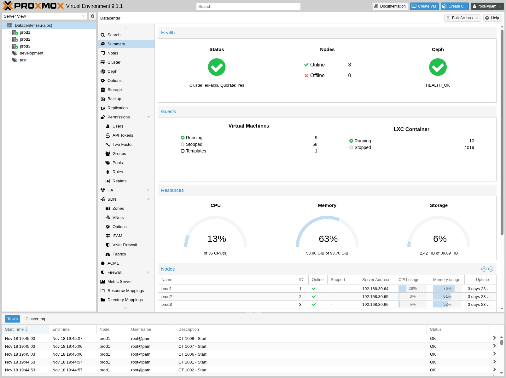
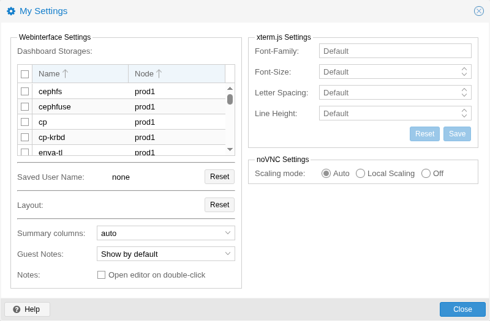

The Proxmox VE user interface consists of four regions.
|
Header |
On top. Shows status information and contains buttons for most important actions. |
|
Resource Tree |
At the left side. A navigation tree where you can select specific objects. |
|
Content Panel |
Center region. Selected objects display configuration options and status here. |
|
Log Panel |
At the bottom. Displays log entries for recent tasks. You can double-click on those log entries to get more details, or to abort a running task. |
You can shrink and expand the size of the resource tree and log panel, or completely hide the log panel. This can be helpful when you work on small displays and want more space to view other content.
On the top left side, the first thing you see is the Proxmox logo. Next to it is the current running version of Proxmox VE. In the search bar nearside you can search for specific objects (VMs, containers, nodes, …). This is sometimes faster than selecting an object in the resource tree.
The right part of the header contains four buttons:
|
Documentation |
Opens a new browser window showing the reference documentation. |
|
Create VM |
Opens the virtual machine creation wizard. |
|
Create CT |
Open the container creation wizard. |
|
User Menu |
Displays the identity of the user you’re currently logged in with, and clicking it opens a menu with user-specific options. In the user menu, you’ll find the My Settings dialog, which provides local UI settings. Below that, there are shortcuts for TFA (Two-Factor Authentication) and Password self-service. You’ll also find options to change the Language and the Color Theme. Finally, at the bottom of the menu is the Logout option. |

The My Settings window allows you to set locally stored settings. These include the Dashboard Storages which allow you to enable or disable specific storages to be counted towards the total amount visible in the datacenter summary. If no storage is checked the total is the sum of all storages, same as enabling every single one.
Below the dashboard settings you find the stored user name and a button to clear it as well as a button to reset every layout in the GUI to its default.
On the right side there are xterm.js Settings. These contain the following options:
|
Font-Family |
The font to be used in xterm.js (e.g. Arial). |
|
Font-Size |
The preferred font size to be used. |
|
Letter Spacing |
Increases or decreases spacing between letters in text. |
|
Line Height |
Specify the absolute height of a line. |
This is the main navigation tree. On top of the tree you can select some predefined views, which change the structure of the tree below. The default view is the Server View, and it shows the following object types:
|
Datacenter |
Contains cluster-wide settings (relevant for all nodes). |
|
Node |
Represents the hosts inside a cluster, where the guests run. |
|
Guest |
VMs, containers and templates. |
|
Storage |
Data Storage. |
|
Pool |
It is possible to group guests using a pool to simplify management. |
The following view types are available:
|
Server View |
Shows all kinds of objects, grouped by nodes. |
|
Folder View |
Shows all kinds of objects, grouped by object type. |
|
Pool View |
Show VMs and containers, grouped by pool. |
|
Tag View |
Show VMs and containers, grouped by tags. |
The main purpose of the log panel is to show you what is currently going on in your cluster. Actions like creating an new VM are executed in the background, and we call such a background job a task.
Any output from such a task is saved into a separate log file. You can view that log by simply double-click a task log entry. It is also possible to abort a running task there.
Please note that we display the most recent tasks from all cluster nodes here. So you can see when somebody else is working on another cluster node in real-time.
We remove older and finished task from the log panel to keep that list short. But you can still find those tasks within the node panel in the Task History.
Some short-running actions simply send logs to all cluster members. You can see those messages in the Cluster log panel.